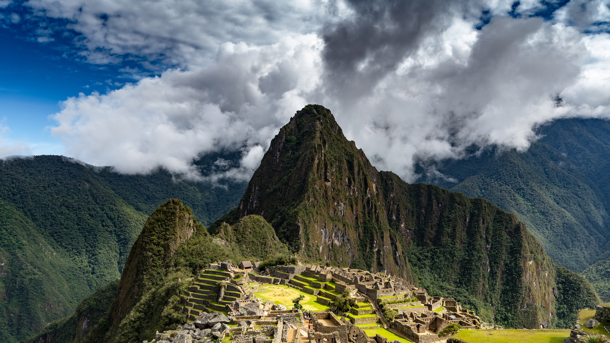

Data
- Country: Peru
- Region: Cusco
- Altitude: 2,430 m
- Built: 15th Century
- Civilization: Inca Empire
- UNESCO Status: World Heritage since 1983
Weather

- Temperature: 8 °C
- Wind Speed: 12 km/h
- Condition: Partly Cloudy
- Wind Chill:
